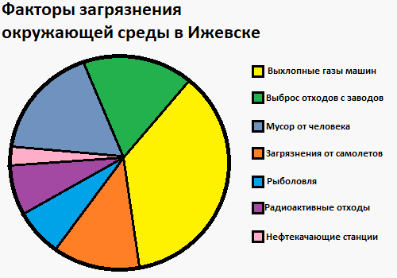

Состояние экологии в Ижевске
В настоящее время, как и практически во всех регионах страны, довольно остро воспринимается проблема загрязнения окружающей среды. По данным статистики, с которой вы можете ознакомится ниже, более половины загрязнения окружающей среды приходится на выхлопные газы, отходы заводов и на мусор от самого человека - под этим подразумевается весь мусор, который можно встретить на улице - консервные банки, бумажки, сигареты и тому подобное.

"Факторы загрязнения в Ижевске"
Как вы видите, статистика довольно печальная. Изменить ее можно, и даже нужно. Начать нужно каждому из нас с себя. Выкидывать мусор в урну, не сорить в общественных помещениях, сортировать и правильно утилизировать отходы - пластиковые бутылки в отдельные места, батарейки и опасные отходы - в другие. Ознакомиться с тем, какой мусор и куда складывать вы можете здесь.
Из нашего личного опыта стоит отметить то, что даже несмотря на то, что мусорные урны расположены практически повсеместно, даже невдалеке или около них находится различный мусор. Чаще всего это банки из-под энергетических напитков, бумажные стаканчики для кофе, сигареты и алкогольные напитки. Этот факт говорит о том, что практически большая часть людей, проживающих в России - это ленивые, безответственные люди. Даже когда они видят, что бросив мусор в урну он выпал из нее, они не обращают на это никакого внимания, проявляя полнейшее безразличие к облику их родного города, к другим людям и к окружающей среде.